Plot the results, motion of masses and reaction forces
| > | TF := 10: |
Plot of s2 with the equilibrium value found using PVW
| > | display(odeplot(sol_dae,[t,s__2(t)],t=0..TF,
labels = ["time (s)", "(m)"], title = " s__2 "),plot(op(2,sol_fs[1]),x=0..10,color="red",legend="Equilibrium PVW"),size=[800,300]); |
| 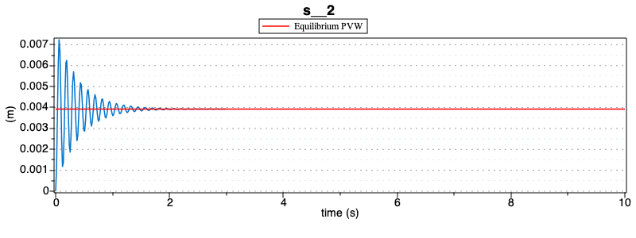 |
Plot of s3 with the equilibrium value found using PVW
| > | display(odeplot(sol_dae,[t,s__3(t)],t=0..TF,
labels = ["time (s)", "(m)"], title = "Coordinate s__3"),plot(op(2,sol_fs[2]),x=0..10,color="red",legend="Equilibrium PVW"),size=[800,300]); |
| 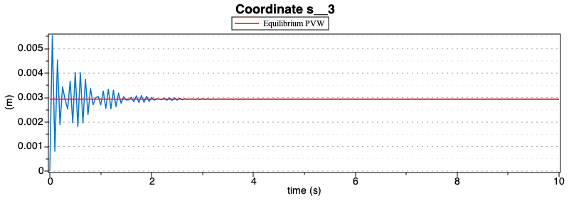 |
Plot of theta1 with the equilibrium value found using PVW
| > | display(odeplot(sol_dae,[t,theta__1(t)*180/Pi],t=0..TF,
labels = ["time (s)", "(deg)"], title = "revolute joint rotation angle theta__1"),plot(op(2,sol_fs[3]*180/Pi),x=0..10,color="red",legend="Equilibrium PVW") ,size=[800,300]); |
| 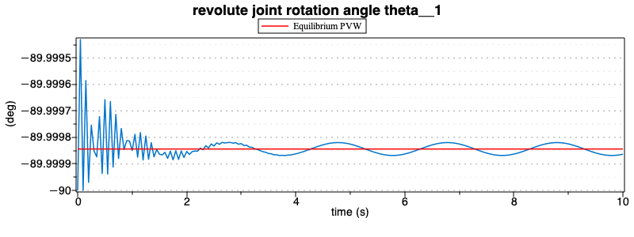 |
Plot of theta2 with the equilibrium value found using PVW
| > | display(odeplot(sol_dae,[t,theta__2(t)*180/Pi],t=0..TF,
labels = ["time (s)", "(deg)"], title = "revolute joint rotation angle theta__2" ),plot(op(2,sol_fs[4]*180/Pi),x=0..10,color="red",legend="Equilibrium PVW") ,size=[800,300]); |
| 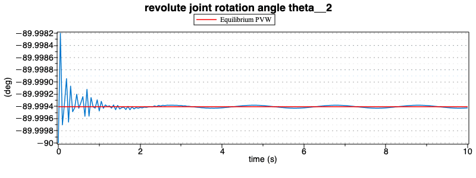 |
Plot of theta3 with the equilibrium value found using PVW
| > | display(odeplot(sol_dae,[t,theta__3(t)*180/Pi],t=0..TF,
labels = ["time (s)", "(deg)"], title = "revolute joint rotation angle theta__3" ),plot(op(2,sol_fs[5]*180/Pi),x=0..10,color="red",legend="Equilibrium PVW") ,size=[800,300]); |
| 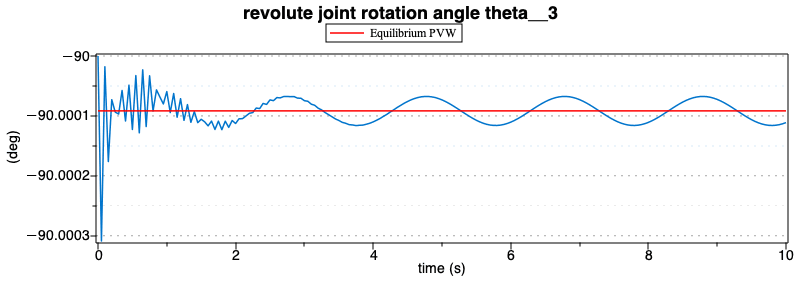 |
Plot of the constraint equation Phi1
| > | odeplot(sol_dae,subs(data,[t,Phi[1]]),t=0..TF,
labels = ["time (s)", "()"], title = "Constraint equations" ); |
| 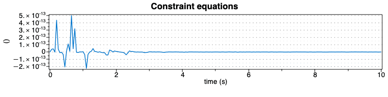 |
Plot of the constraint equation Phi2
| > | odeplot(sol_dae,subs(data,[t,Phi[2]]),t=0..TF,
labels = ["time (s)", "()"], title = "Constraint equations" ); |
| 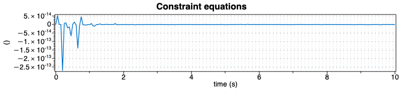 |
Force of Spring K__s2 and Damper C__s2
| > | display(odeplot(sol_dae,subs(data,[t,-K__s2*s__2(t)-C__s2*diff(s__2(t),t)]),t=0..TF,
labels = ["time (s)", "(N)"], title = "Force Spring and Damper"),plot( subs(data,-K__s2*op(2,sol_fs[1] )),x=0..10,color="red",legend="Equilibrium PVW"),size=[800,300]); |
| 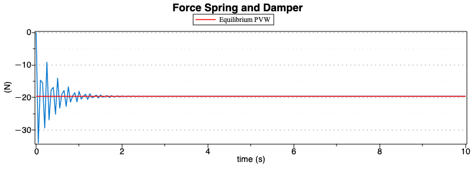 |
Force of Spring K__s3 and Damper C__s3
| > | display(odeplot(sol_dae,subs(data,[t,-K__s3*s__3(t)-C__s3*diff(s__3(t),t)]),t=0..TF,
labels = ["time (s)", "(N)"], title = "Force Spring and Damper "),plot( subs(data,-K__s3*op(2,sol_fs[2] )),x=0..10,color="red",legend="Equilibrium PVW"),size=[800,300]); |
| > |
| 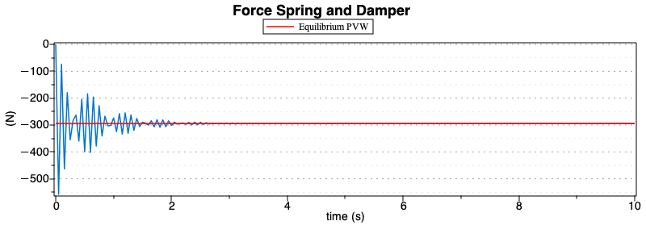 |
Plot the Motion of the different masses
| > | odeplot(sol_dae,subs(data,[t,G1[1]]),t=0..TF,
labels = ["time (s)", "(m)"], title = "Coordinate x of G1" ); |
| 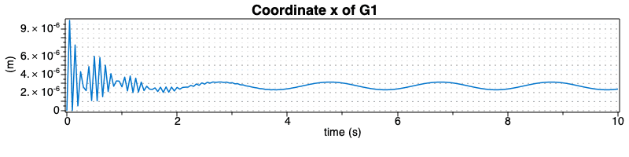 |
| > | odeplot(sol_dae,subs(data,[t,G1[2]]),t=0..TF,
labels = ["time (s)", "(m)"], title = "Coordinate y of G1"); |
| 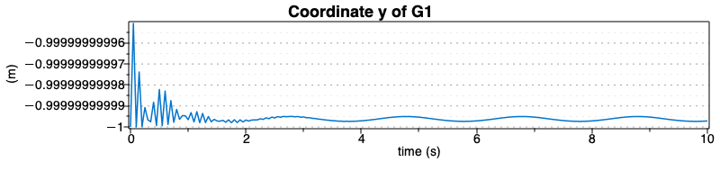 |
Plot the modulus of the acceleration of mass G1
| > | odeplot(sol_dae,subs(data,[t,sqrt(diff(G1[1],t,t)^2+diff(G1[2],t,t)^2)]),t=0..TF,
labels = ["time (s)", m/s^2], title = "Acceleration of G1"); |
| 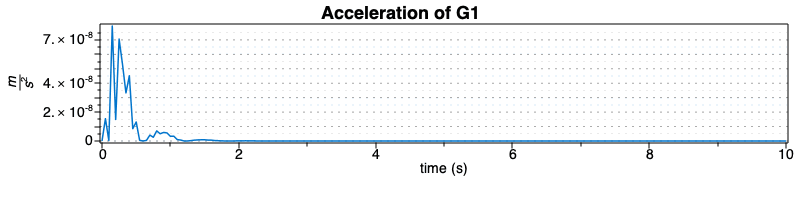 |
| > | odeplot(sol_dae,subs(data,[t,G2[1]]),t=0..TF,
labels = ["time (s)", "(m)"], title = "Coordinate x of G2" ); |
| 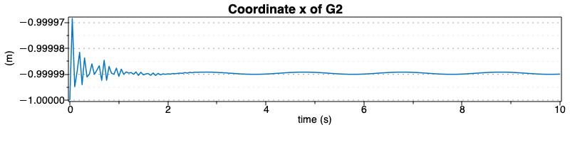 |
| > | odeplot(sol_dae,subs(data,[t,G2[2]]),t=0..TF,
labels = ["time (s)", "(m)"], title = "Coordinate y of G2"); |
| 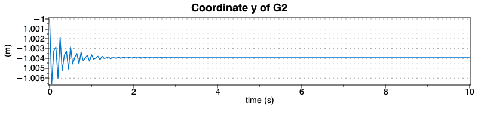 |
Plot the modulus of the acceleration of mass G2
| > | odeplot(sol_dae,subs(data,[t,sqrt(diff(G2[1],t,t)^2+diff(G2[2],t,t)^2)]),t=0..TF,
labels = ["time (s)", m/s^2], title = "Acceleration of G2"); |
| 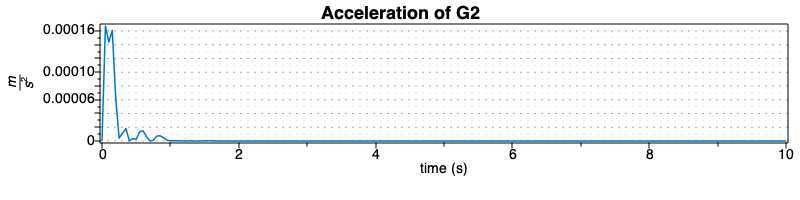 |
| > | odeplot(sol_dae,subs(data,[t,G3[1]]),t=0..TF,
labels = ["time (s)", "(m)"], title = "Coordinate x of G3"); |
| 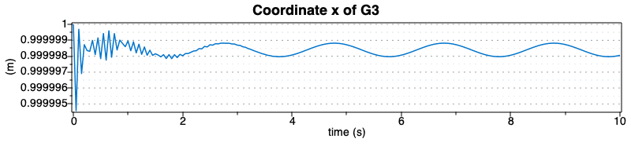 |
| > | odeplot(sol_dae,subs(data,[t,G3[2]]),t=0..TF,
labels = ["time (s)", "(m)"], title = "Coordinate y of G3"); |
| 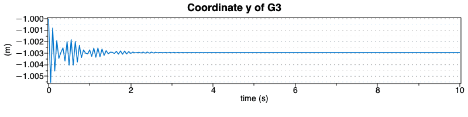 |
Plot the modulus of the acceleration of mass G3
| > | odeplot(sol_dae,subs(data,[t,sqrt(diff(G3[1],t,t)^2+diff(G3[2],t,t)^2)]),t=0..TF,
labels = ["time (s)", m/s^2], title = "Acceleration of G3"); |
| 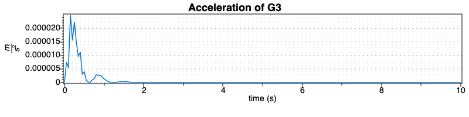 |
Plot the Reaction forces on the different masses
Plot the reaction force Rx acting on mass G1
| > | odeplot(sol_dae,subs(data,[t,m__1*diff(G1[1],t,t)]),t=0..TF,
labels = ["time (s)", "(N)"], title = "Reaction force Rx on G1" ); |
| 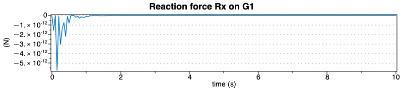 |
Plot the reaction force Ry acting on mass G1
| > | odeplot(sol_dae,subs(data,[t,m__1*diff(G1[2],t,t)]),t=0..TF,
labels = ["time (s)", "(N)"], title = "Reaction force Ry on G1" ); |
Plot the modulus of the reaction forces acting on mass G1
| > | odeplot(sol_dae,subs(data,[t,sqrt((m__1*diff(G1[1],t,t))^2+(m__1*diff(G1[2],t,t))^2)]),t=0..TF,
labels = ["time (s)", "(N)"], title = "Total Reaction force on G1" ); |
| 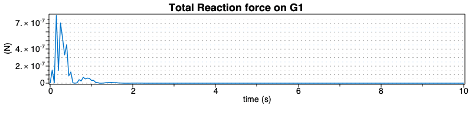 |
Plot the reaction force Rx acting on mass G2
| > | odeplot(sol_dae,subs(data,[t,m__1*diff(G2[1],t,t)]),t=0..TF,
labels = ["time (s)", "(N)"], title = "Reaction force Rx on G2" ); |
| 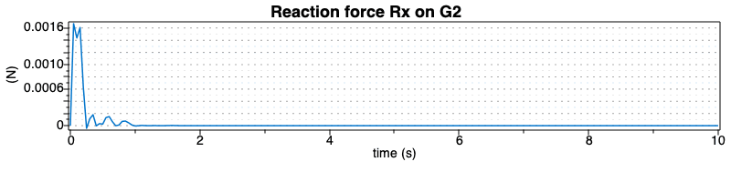 |
Plot the reaction force Ry acting on mass G2
| > | odeplot(sol_dae,subs(data,[t,m__1*diff(G2[2],t,t)]),t=0..TF,
labels = ["time (s)", "(N)"], title = "Reaction force Ry on G2" ); |
| 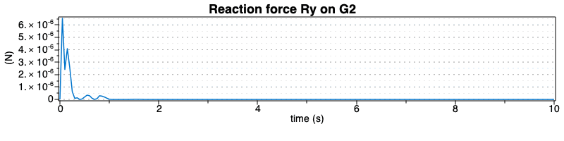 |
Plot the modulus of the reaction forces acting on mass G2
| > | odeplot(sol_dae,subs(data,[t,sqrt((m__1*diff(G2[1],t,t))^2+(m__1*diff(G2[2],t,t))^2)]),t=0..TF,
labels = ["time (s)", "(N)"], title = "Total Reaction force on G2" ); |
| 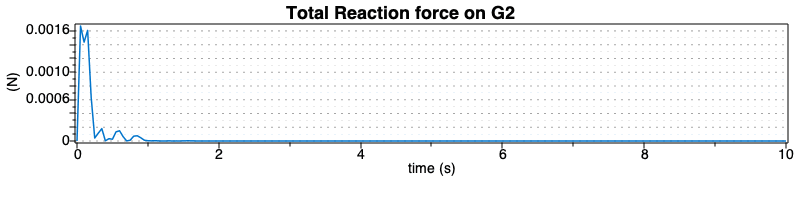 |
Plot the reaction force Rx acting on mass G3
| > | odeplot(sol_dae,subs(data,[t,m__1*diff(G3[1],t,t)]),t=0..TF,
labels = ["time (s)", "(N)"], title = "Reaction force Rx on G3" ); |
| 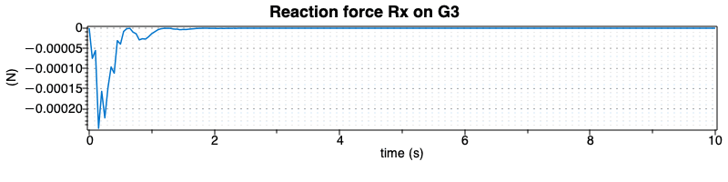 |
Plot the reaction force Ry acting on mass G3
| > | odeplot(sol_dae,subs(data,[t,m__1*diff(G3[2],t,t)]),t=0..TF,
labels = ["time (s)", "(N)"], title = "Reaction force Ry on G3" ); |
| 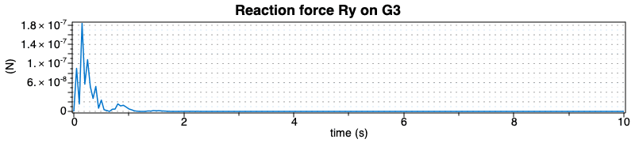 |
Plot the modulus of the reaction forces acting on mass G3
| > | odeplot(sol_dae,subs(data,[t,sqrt((m__1*diff(G3[1],t,t))^2+(m__1*diff(G3[2],t,t))^2)]),t=0..TF,
labels = ["time (s)", "(N)"], title = "Total Reaction force on G3" ); |
| 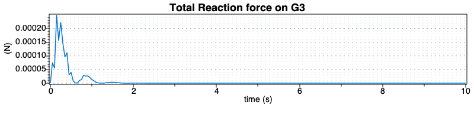 |